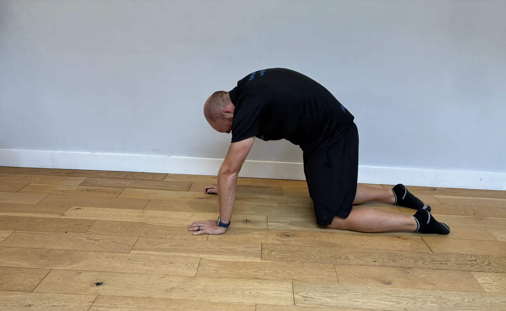
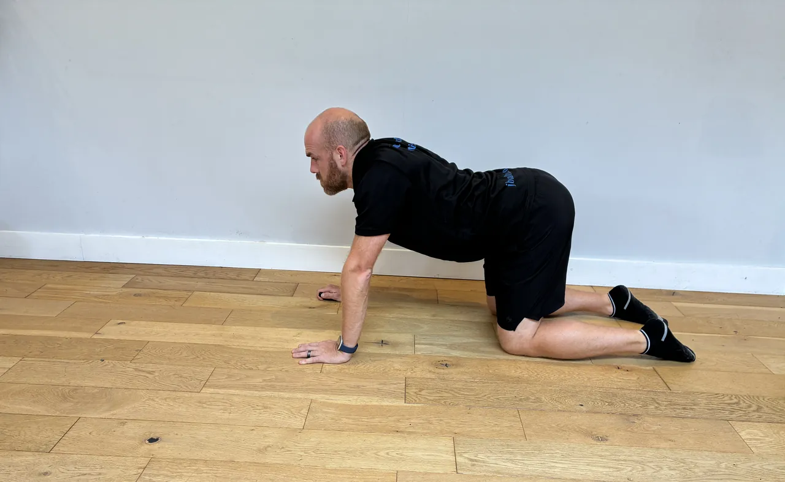
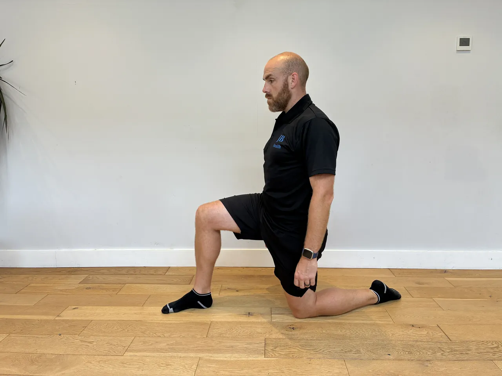
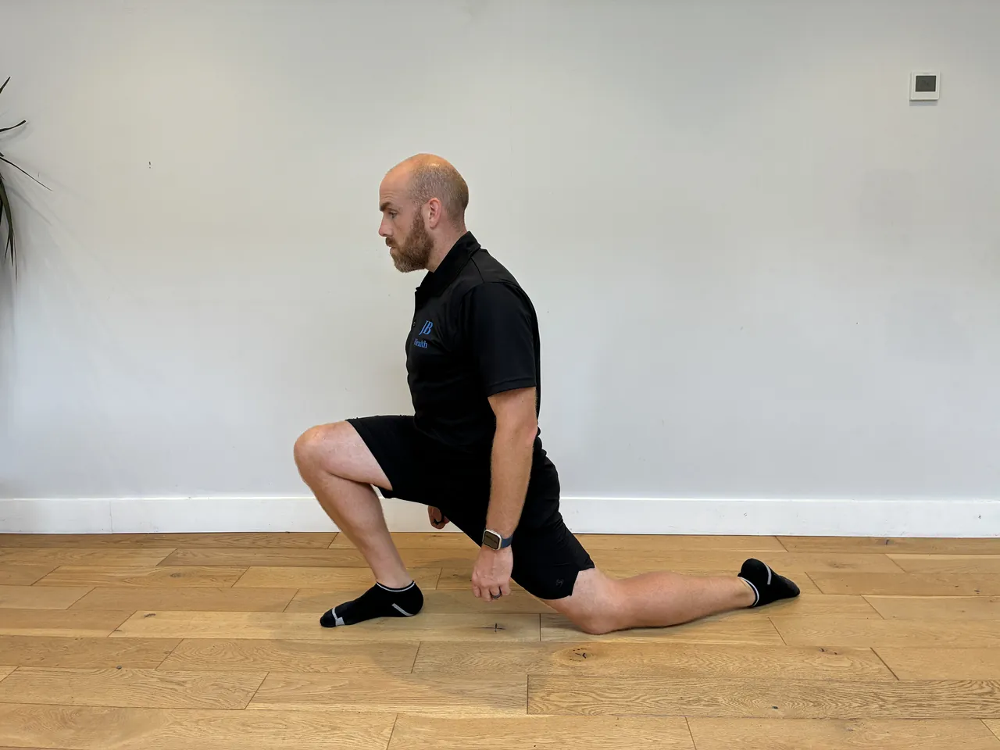

Start: On all fours, hands under shoulders, knees under hips, spine in a neutral start.
Movement: Slowly arch the back and lift the head (cow), then round the back and tuck the chin (cat), flowing between the two with the breath.
Focus: Move slowly and segment by segment through the spine, only to a comfortable range. Let the breath lead, and keep the movement gentle rather than forcing either end.
Start: Stand tall, feet hip-width, a weight held at the chest or hands free for balance.
Movement: Lunge in a set sequence, changing direction each rep (forward, reverse, lateral, angled), lowering under control and pushing back to standing between each.
Focus: Keep the front knee tracking over the foot, never caving in, and the torso tall. Push back to standing through the front heel, and control each direction rather than rushing the sequence.


Start: Stand with a band around the legs (ankles or above the knees), feet hip-width, knees softly bent, torso tall.
Movement: Step sideways one foot at a time, keeping tension on the band, for the set steps, then return the other way.
Focus: Keep tension on the band throughout and the feet pointing forward, not letting the knees cave in. Stay low and controlled, and feel the outer hips work.
Start: Stand tall with a barbell held at the front of your thighs, hands just outside your legs, feet hip-width. Set the shoulders back, brace the core hard, and keep a soft bend in the knees.
Movement: Push the hips back and slide the bar down the front of your legs, keeping it in contact, until you feel a strong stretch in the hamstrings. Keep the knees still and the shins vertical. Drive the hips forward to stand tall and finish with the glutes.
Focus: The back stays flat from start to finish, never rounded. This is a hip hinge, not a squat, so the movement happens at the hips while the bar tracks close to the legs. Only lower as far as you can hold a flat back, and don't lean back or over-arch at the top.
Start: Hand and knee on a bench, the other foot planted, a dumbbell in the free hand hanging down, back flat and level.
Movement: Pull the dumbbell towards the hip, driving the elbow back and up, then lower slowly under control.
Focus: Lead with the elbow and squeeze the shoulder blade, keeping the back flat and level, not twisting to lift. Keep the shoulder down, and control the lower.


Start: Stand tall with a weight in one hand at the side like a suitcase, feet hip-width, ribs down, core braced.
Movement: Walk forward with controlled steps for the set distance, keeping the torso upright and level.
Focus: Resist the pull towards the weighted side, keeping the shoulders and hips level and the ribs down. Take steady steps, brace hard, and don't let the weight swing.


Start: Stand on one leg, torso tall, other foot lifted, arms ready to reach.
Movement: Reach the arms (and torso if set) out to the sides or forward, challenging balance, then return to centre.
Focus: Keep the hips level and the standing knee soft as you reach, moving slowly. Fix the eyes on a point, keep the core engaged, and return under control.
Start: Lie on your back, knees bent, feet flat and hip-width, a weight or bar resting across the front of your hips, held gently in place.
Movement: Drive through the heels and push the hips up until the body is in a straight line, squeeze the glutes hard, hold, then lower with control.
Focus: Lift with the glutes, not by arching the back. Keep the ribs down and the core braced. Stop at a straight line rather than pushing into the lower back.
Start: Half kneel or tall kneel at a cable or band at head height, arms extended forward, hips tall, ribs down.
Movement: Pull towards the face, drawing the hands to the sides of the head with the elbows high, then return under control.
Focus: Lead with the elbows high and squeeze the shoulder blades, not shrugging. Keep the hips tall and the ribs down, and control the return.


Start: Stand tall, balls of the feet on the floor or a step edge, holding a support for balance.
Movement: Rise up onto the toes, then lower the heels slowly over three to four seconds under control.
Focus: Rise smoothly and control the slow lower, feeling the calf lengthen, not dropping. Keep the ankles tracking straight, and stay in a comfortable range.
Start: Stand side-on to a cable or band at chest height, feet shoulder-width, hands holding the handle at the chest, core braced.
Movement: Press the handle straight out in front of you, resisting the pull that wants to rotate you, hold briefly, then draw it back.
Focus: Keep the hips and shoulders square, letting nothing rotate you towards the cable, this is the whole exercise. Keep the ribs down and the core braced, and press smoothly rather than snatching.
Start: Lie on your back, knees bent up over the hips, hands by the sides or under the lower back, ribs down.
Movement: Curl the knees towards the chest by lifting the hips slightly off the floor, then lower under control.
Focus: Curl using the lower abdomen to lift the hips, not swinging the legs. Keep the movement small and controlled, and don't let the lower back arch as you lower.


Start: Half kneel, one knee down and one foot forward, hips square, torso tall.
Movement: Gently push the hips forward until you feel a stretch at the front of the down-leg's hip, then hold.
Focus: Push the hips forward only to a comfortable stretch, keeping the torso tall and not arching the lower back. Squeeze the glute of the down leg, breathe, and don't force the range.
Start: Kneel and sit back towards your heels, arms reaching forward on the floor, forehead down.
Movement: Settle into the position, letting the hips sink back and the back lengthen, and hold, breathing into the stretch.
Focus: Ease into the position rather than forcing it, letting the hips sink only as far as is comfortable. Widen the knees if it eases the back, and breathe slowly throughout.
Start: Sit on the floor with one leg bent in front at 90 degrees and the other bent out to the side at 90 degrees, sitting tall.
Movement: Rotate both knees across to the other side, switching the front and back legs, keeping the movement smooth, then return.
Focus: Keep the torso tall and move from the hips, easing into the range rather than forcing it. Use your hands for support, and work within a comfortable, pain-free range.
Start: Stand tall, feet hip-width, hands relaxed or lightly clasped at the chest for balance.
Movement: Squat in a set sequence, changing stance or direction each rep (feet forward, wider, angled), sitting the hips back and down, then standing tall between each.
Focus: Keep the knees tracking over the toes in every stance, never letting them cave inward. Sit the hips back, keep the chest up, and only go as deep as you can control without knee discomfort.


Start: Lie face down on a bench or mat, arms reaching out overhead in a Y, thumbs up, light or no weight.
Movement: Raise the arms off the floor towards the Y position, squeezing the lower shoulder blades, then lower under control.
Focus: Lead with the thumbs and squeeze the shoulder blades down and in, not shrugging towards the ears. Keep the neck long, use a light weight, and control the lower.


Start: Hold a dumbbell or kettlebell close to your chest with both hands, elbows tucked down, feet shoulder-width, toes slightly out.
Movement: Sit the hips back and down into a squat, keeping the weight at the chest and the torso upright, then drive up through the heels to stand tall.
Focus: Keep the knees tracking over the toes, never caving in, and the heels flat. Keep the chest up and the weight close, and squat only as deep as you can control comfortably.
Start: Lie on a bench, a dumbbell in each hand at chest height, elbows a little below shoulder line, shoulder blades set back, feet planted.
Movement: Press the dumbbells up until the arms are nearly straight, then lower under control to a comfortable stretch.
Focus: Keep the shoulder blades set back on the bench and the elbows tucked to about 45 degrees, not flared wide, to protect the shoulders. Control the lower rather than dropping.
Start: Stand tall with a kettlebell racked at one shoulder, elbow tucked, ribs down, core braced.
Movement: Walk forward with controlled steps for the set distance, keeping the torso tall and steady.
Focus: Keep the ribs down and resist leaning away from the weight, staying square. Keep the shoulder down and the elbow tucked, take steady steps, and brace the core.
Start: Stand on one leg holding a kettlebell, the other leg ready to travel back, torso tall, standing knee soft.
Movement: Hinge forward from the hip, letting the free leg travel back as the kettlebell lowers, then return to standing.
Focus: Hinge from the hip with a flat back, not rounding, and keep the hips level, not opening out. Keep the standing knee soft, move slowly, and control the return.


Start: Stand with a kettlebell on the floor in front, feet hip-width, hinged with a flat back, core braced.
Movement: Hike the kettlebell back between the legs, then drive the hips forward to swing it up to about chest height, letting it swing back down into the next hinge.
Focus: Power the swing from a sharp hip drive, not the arms or lower back, keeping the back flat throughout. Snap the glutes at the top with the ribs down, and let the arms just guide the bell.


Start: Hinge forward with a flat back, a light dumbbell in each hand hanging below the chest, elbows softly bent.
Movement: Raise the arms out to the sides to shoulder height, squeezing the shoulder blades, then lower under control.
Focus: Keep a soft bend in the elbows and lead with the backs of the hands, squeezing the shoulder blades. Keep the ribs down and don't swing or shrug, and use a light weight for control.
Start: Stand on one foot, the ball of the foot on a step edge, a weight in the hand, holding a support with the other.
Movement: Rise up onto the toes as high as you comfortably can, then lower the heel slowly under control.
Focus: Rise and lower slowly and evenly, not bouncing, through the full comfortable range. Keep the ankle tracking straight, not rolling out, and control the lower.


Start: Lie on your back, knees bent over the hips, arms towards the ceiling, lower back pressed gently into the floor.
Movement: Lower the opposite arm and leg slowly towards the floor, keeping the back flat, then return and swap sides.
Focus: Keep the lower back pressed to the floor as the limbs extend, never letting it arch. Move slowly and controlled, and shorten the reach if the back lifts.
Start: Lie on your back, knees bent up, hands lightly behind the head, elbows wide, ribs down.
Movement: Bring one elbow towards the opposite knee as that knee draws in and the other leg extends, then alternate in a pedalling rhythm.
Focus: Rotate through the trunk and keep the elbows wide, not pulling on the neck. Keep the lower back settled and move at a controlled pace, not rushing.
Start: Lie on your back, one ankle crossed over the opposite thigh, hands holding the supporting leg.
Movement: Gently draw the supporting leg towards the chest until you feel a stretch deep in the crossed hip, then hold.
Focus: Draw the leg in only to a comfortable stretch, keeping the crossed knee open. Keep the head and shoulders relaxed on the floor, breathe, and ease off if it pinches.
Start: Stand or sit tall, one arm drawn across the body at shoulder height, the other hand supporting it at the elbow or forearm.
Movement: Gently draw the arm further across the body until you feel a stretch at the back of the shoulder, then hold.
Focus: Draw the arm across only to a comfortable stretch, keeping the shoulder down rather than shrugging. Breathe, and don't force it past a gentle stretch.
Start: On all fours, hands under shoulders, knees under hips, spine in a neutral start.
Movement: Slowly arch the back and lift the head (cow), then round the back and tuck the chin (cat), flowing between the two with the breath.
Focus: Move slowly and segment by segment through the spine, only to a comfortable range. Let the breath lead, and keep the movement gentle rather than forcing either end.
Start: Stand with a band around the legs (ankles or above the knees), feet hip-width, knees softly bent, torso tall.
Movement: Step sideways one foot at a time, keeping tension on the band, for the set steps, then return the other way.
Focus: Keep tension on the band throughout and the feet pointing forward, not letting the knees cave in. Stay low and controlled, and feel the outer hips work.
Start: Sit tall, arms relaxed or bent at the sides, ribs down, neck long.
Movement: Draw the shoulder blades back and together, hold briefly, then release under control.
Focus: Squeeze the shoulder blades together without shrugging up towards the ears. Keep the neck relaxed and the ribs down, and move slowly and deliberately.
Start: Sit in the leg press, feet flat and hip to shoulder-width on the platform, hips and back settled into the pad, core braced.
Movement: Lower the platform under control until the knees reach a comfortable bend, then press back up through the whole foot without locking out hard.
Focus: Keep the knees tracking in line with the toes, never caving in, and the hips flat against the pad. Control the depth to what the knees allow, and don't slam the knees straight at the top.
Start: Sit at the machine, thighs under the pads, hands on the bar wider than shoulders, arms extended up, chest up.
Movement: Pull the bar down towards the upper chest by driving the elbows down, then return it up slowly under control.
Focus: Lead with the elbows and squeeze the shoulder blades down, not shrugging up. Keep the chest up and avoid leaning back to heave the bar, and control the return.
Start: Stand tall holding a weight overhead in each hand, arms straight, ribs down, core braced.
Movement: Walk forward with controlled steps for the set distance, keeping the weights stable overhead.
Focus: Keep the ribs down and don't arch the lower back to hold the weights up, staying tall. Keep the shoulders stable and the arms straight, and take steady steps.
Start: Stand on one leg near a support, torso tall, other foot lifted, then close the eyes.
Movement: Hold the single-leg balance with the eyes closed for the set time, then swap.
Focus: Keep the hips level and the standing knee soft, making constant small ankle adjustments without sight. Keep the core engaged, breathe, and keep support within reach.
Start: Face away from a low cable, rope between your legs, feet shoulder-width. Step forward to take the tension, hands holding the rope, soft knees.
Movement: Push the hips back and let the rope draw between your legs with a flat back, then drive the hips forward to stand tall and squeeze the glutes.
Focus: Drive the movement from the hips, not the arms, the arms just hold the rope. Keep the back flat, and finish standing tall without leaning back or arching.
Start: Stand side-on to a low cable, a handle in the outside hand, arm across the front, elbow softly bent, ribs down.
Movement: Raise the arm out to the side to shoulder height, leading with the elbow, then lower under control.
Focus: Lead with the elbow and keep the shoulder down, not shrugging, raising only to shoulder height. Keep the ribs down and control the lower.
Start: Half kneel or stand with one foot forward, flat on the floor, toes pointing straight ahead.
Movement: Gently drive the knee forward over the toes, keeping the heel down, to a comfortable stretch at the front of the ankle, then return.
Focus: Keep the heel firmly down and let the knee travel over the toes only to a comfortable range. Move slowly, keep the foot pointing straight, and don't force the stretch.
Start: Stand side-on to a high cable, handle in both hands above one shoulder, arms extended, feet planted, core braced.
Movement: Sweep the handle down and across to the opposite hip, rotating through the trunk, then return under control.
Focus: Turn through the trunk with the hips pivoting, not twisting the lower back or knees. Keep the ribs down, drive from the core, and control the return.
Start: Lie on your back, legs raised towards the ceiling, hands by the sides or under the hips, ribs down.
Movement: Circle the legs in a controlled corkscrew pattern, lowering and sweeping round, then reverse.
Focus: Move the legs slowly from the core and keep the lower back gently pressed down. Keep the circles small enough that the back stays flat, and control throughout.
Start: Lie on your back, legs extended, relaxed.
Movement: Draw one knee up towards the chest, hold it gently with the hands, feel the stretch, then release and swap.
Focus: Draw the knee in only to a comfortable stretch, never forcing. Keep the other leg and the lower back relaxed, breathe, and ease off if it pinches.
Start: Lie on your side, the bottom arm out in front at shoulder height, elbow bent to 90 degrees, forearm up.
Movement: Use the top hand to gently press the bottom forearm down towards the floor until you feel a stretch at the back of the shoulder, then hold.
Focus: Press only to a gentle, comfortable stretch, never forcing, as this shoulder position is sensitive. Keep the shoulder blade settled, breathe, and back off at any pinch.